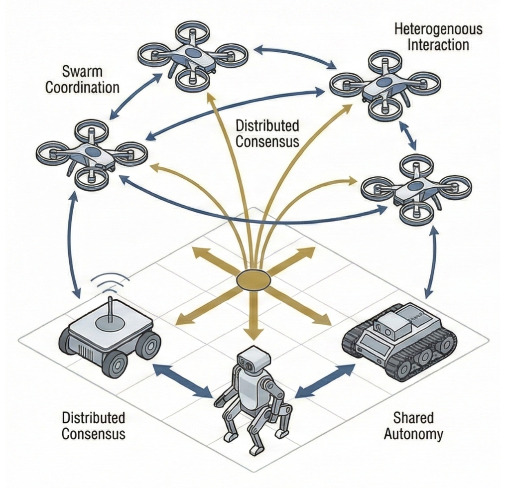
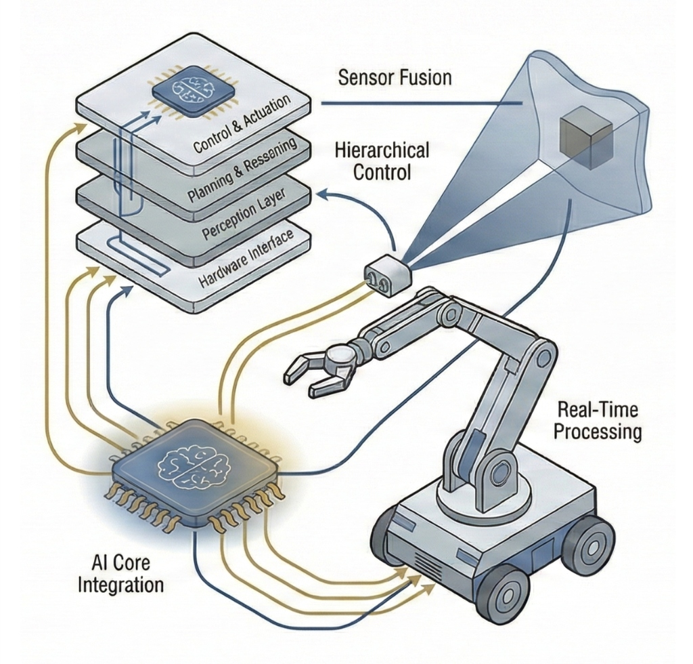
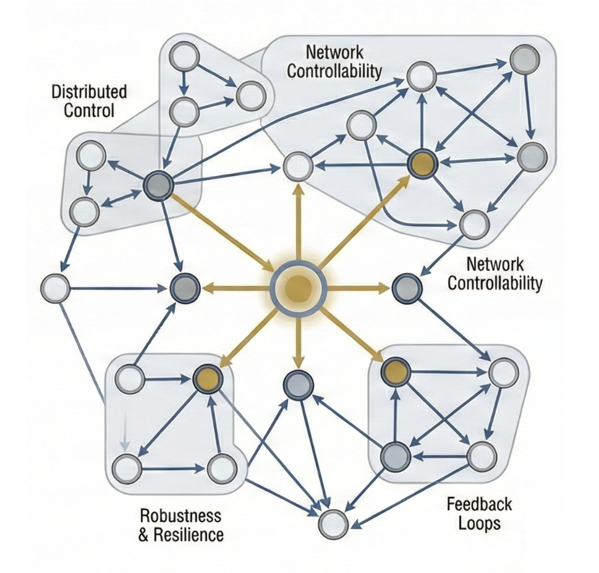
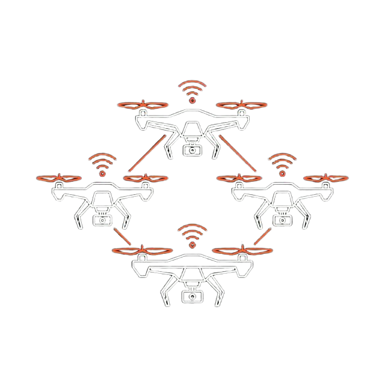
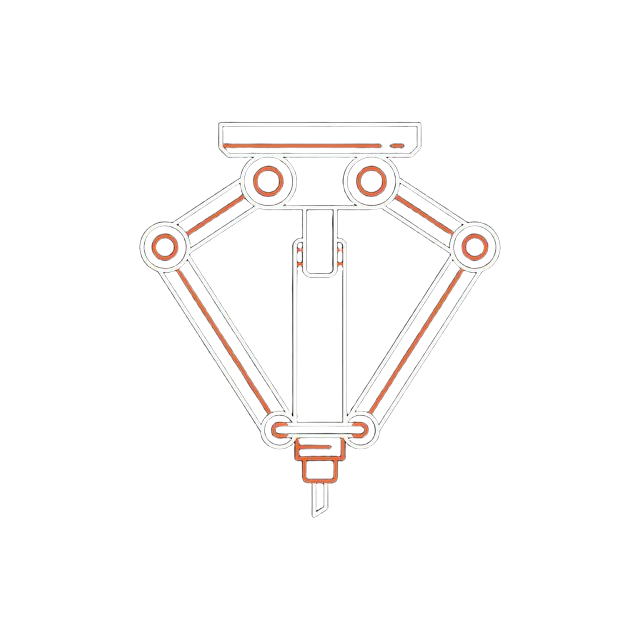
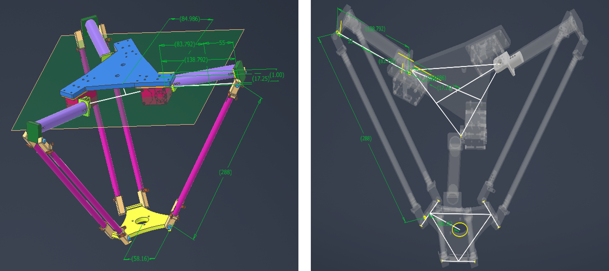
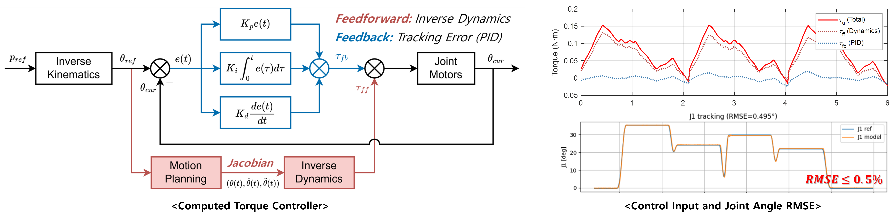
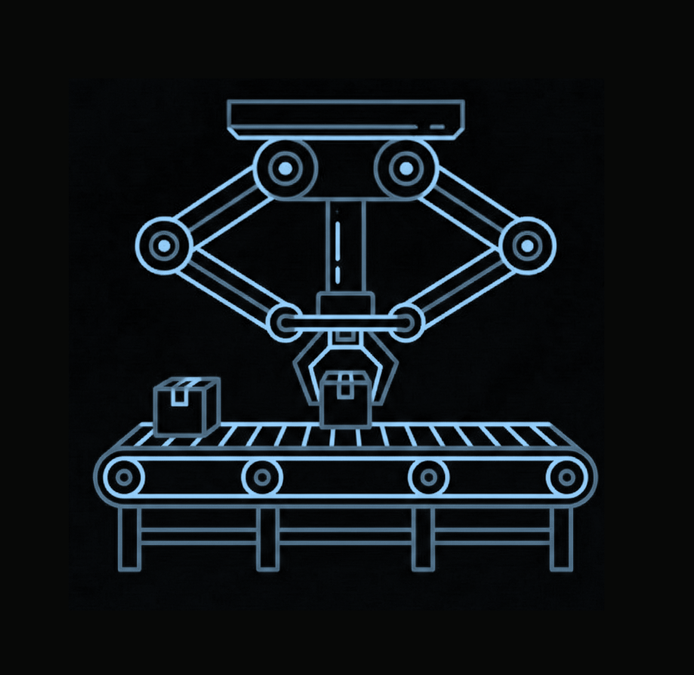
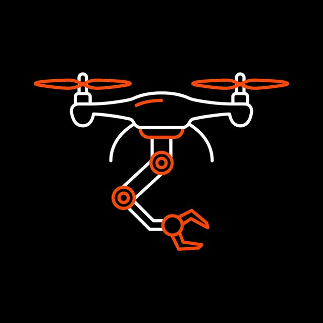

Linear Algebra Undergraduate
연립일차방정식에서 출발해 행렬과 행렬식, 벡터공간, 선형변환, 고윳값과 고유벡터, 복소벡터공간까지 다룹니다. 계산 절차를 익히는 데 그치지 않고 왜 그렇게 되는지를 함께 봅니다. 여기서 다루는 벡터공간과 고윳값은 뒤에 이어지는 선형시스템의 상태공간 모델과 안정성 해석이 그대로 올라앉는 토대입니다.
다개체 로보틱스 및 제어시스템 연구실
Scroll Down



MARS Lab은 여러 대의 드론과 로봇이 협력하여 하나의 통합된 시스템으로 동작하도록 만드는 연구를 수행합니다. 단일 로봇 중심 접근의 한계를 다개체·이종 시스템 협력으로 확장하고, 그 과정에서 발생하는 다양한 상호작용 및 통합 문제를 시스템 수준에서 설계하고 해결하는 것이 핵심 목표입니다.
우리는 다개체 편대제어(Formation control), 협력 위치 추정(Localization), 환경 인지(Perception), 그리고 로봇 시스템(Robotics, Physical AI)을 연구하며, 개별 기술들을 하나의 시스템으로 통합하고 실험을 통해 검증합니다. 이 과정에서 학생들은 이론적 기초를 바탕으로 HW/SW 통합 설계, 구현, 실험 검증까지 이어지는 전 과정을 경험하게 됩니다. 또한 생성형 인공지능(Generative AI), AI 기반 개발 도구, 지능형 에이전트 기술 등을 활용하여 복잡한 시스템을 보다 효율적으로 설계하고 분석하는 방법도 함께 학습합니다.
다가오는 인공지능 시대의 자율 드론, 스마트 로봇, UAM, 자율 이동체 산업에서는 다양한 이종(Heterogeneous) 시스템을 통합적으로 설계할 수 있는 역량이 더욱 중요해지고 있습니다. MARS Lab은 이론과 실증을 연결하고, 인공지능 기반 개발 환경을 적극 활용하여 새로운 시스템과 환경 변화에도 무한히 확장·적응할 수 있는 통합형 시스템 엔지니어를 양성합니다.

다수 드론의 편대제어 및 자율비행 시스템 연구
다수 드론의 협력 임무 수행을 위한 편대 제어(Formation
Control) 및 측위(Localization) 기술
연구
다개체 편대 제어는 여러 대의 드론이 일정한 형태를 유지하며 협력 임무를 수행하도록 만드는 핵심 기술입니다. 이를 위해서는 각 드론의 위치를 실시간으로
추정하고 제어하는 측위(Localization) 기술이 필수적입니다.
측위 방식은 크게 두 가지로 나뉩니다. 첫째는 GPS와 같이 지구상 위도/경도를 활용하는 전역
정보(Global Information) 방식입니다. 이 경우 각 드론의 절대적인 위치를 눈으로 보듯 정확히 알 수 있어 원하는
대형과 경로로 제어하기 비교적 용이합니다.
하지만 터널, 빌딩 숲, 저고도 비행 등 GPS 신호가 끊기거나 오차가 커지는 GPS 음영
지역(GPS-denied environment)에서는 다른 접근이 필요합니다. 이때는 인접 드론들과의 거리나 통신 강도 등
지역 정보(Local Information)만을 활용하여 대형을 유지하는 기술이
요구됩니다.
MARS Lab은 이러한 다양한 극한 상황에 유연하게 대응하기 위해, 전역 정보와 지역 정보를 상황에 맞게 융합하는 최적의 솔루션을 개발합니다. 드론
하드웨어 설계부터 군집 관제를 위한 통신망, 그리고 분산 제어를 위한 수학적/네트워크 시스템 소프트웨어까지 아우르는 독자적인 기술력을 바탕으로, 이를
크게 세 가지(Position, Distance, Network-based) 연구로 세분화하여 진행하고 있습니다.
전역 정보(GPS)를 이용한 사전 정의 경로(Predetermined Trajectory) 기반 자율 편대 비행 시스템입니다.
각 드론에 장착된 LED 패턴 또한 사전에 프로그래밍되어 야간 군집 비행(Drone Show) 등에 응용될 수 있습니다.
전체 시스템은 중앙 지상 통제국(GCS, Ground Control Station) 서버를 통해 제어되며, GCS의 단일 명령(모드 변경)으로 전체
편대 시스템을 한 번에 제어할 수 있습니다. 또한 직관적인 GUI 상태 모니터링 툴을 통해 비행 중인 모든 드론의 개별 상태를 실시간으로 확인할 수
있습니다.
지역 정보 및 거리 측정을
활용한 협력 측위 시스템 (GPS-Denied 환경 대응)
이 시스템은 고정된 위치 기준점이 되는 4대의 앵커(Anchor) 드론과 측위의
대상이 되는 1대의 태그(Tag) 드론으로 구성됩니다. 직관적으로 비유하자면, 4대의
앵커 드론이 띄워놓은 '인공위성' 역할을 하고, 태그 드론이 위성 신호를 받아 '현재 나의 위치를 지도 앱(Map App)에 띄워주는
스마트폰' 역할을 하는 것과 같습니다.
태그 드론은 자체 GPS 센서 없이도(전역 정보 부재), 인접한 앵커 드론들의 위치 정보와 UWB 센서를 통한 거리 정보를 융합하여 스스로의 위치를
비행 제어기(FC) 내부에서 실시간으로 계산해 냅니다. 이를 통해 지상 통제국(GCS) 시스템의 개입 없이도 5대의 드론이 ROS 기반 분산 제어를 통해 정밀한 군집 편대를 형성할 수 있습니다.
인접 드론 간 상대 정보를
활용한 분산 최적화(Distributed Optimization) 및 자율
네트워크 제어 시스템
드론 간의 물리적 통신 거리 제약과 통신 강도 등 다양한 네트워크 변수들을 목적 함수(Objective Function)로 구성하여 제어하는
시스템입니다. 각 드론은 전체 시스템을 총괄하는 중앙 관제 없이, 오직 인접한 드론과의 정보 교환만으로 자신의 위치를 스스로 결정(Distributed
Optimization)합니다.
이는 마치 여러 관절로 이루어진 로봇팔이 움직이는 원리와 유사하며, 편대의 가장 끝에서 임무를 수행하는 드론을 End-effector라고 정의합니다. 이 기술은 터널이나 저고도 환경처럼 통신과 GPS가
모두 불안정한 상황에서도, 중계 드론들을 이용한 임시 통신망(Ad-hoc Network)을 구축하여 끊김 없는 안정적인 측위와 군집 제어를 가능하게
합니다.

고속 병렬로봇 설계 및 다개체 작업할당 알고리즘 연구
델타 로봇 전주기(A to Z) 자체 개발 및 다개체 작업 할당(Task Assignment) 연구 (진행 중) 본 연구는 고속 병렬 로봇인 델타 로봇의 3D 모델링 설계부터 정밀 제어기 개발, 시뮬레이션, CNC 공정을 통한 프로토타입 제작, 그리고 실제 제어 성능 평가까지 시스템 구축의 A to Z를 독자적으로 수행합니다. 나아가 단일 로봇 제어를 넘어, 여러 대의 델타 로봇이 협력하여 공정을 처리하는 다개체 작업 할당(Task Assignment Problem)까지 연구 범위를 확장하여 진행 중입니다.

3D Modeling

CNC 공정 프로토타입

제어기 구조 및 제어 성능

비전 센서 기반 산업용 고속 물류 자동화 시스템
비전
센서 기반 고속 물류 자동화 및 제어 알고리즘 검증 시스템
농산물 산지유통센터(APC) 등 실제 산업 현장에 즉시 투입 가능한 비전 기반 고속 Pick-and-Place 물류 자동화 시스템입니다.
이 시스템은 라이다(LiDAR) 같은 고가의 센서 장비 없이, 오직 Vision 센서
하나만으로 객체 인식(Object Detection)과 깊이 추정(Depth Estimation)을 수행해 타겟의 3차원 위치를 정밀하게 파악합니다.
특히 상용 임베디드 보드(Jetson Nano)와 같은 제한된 하드웨어 환경 내에서 복잡한 이미지 프로세싱과 자동화 제어 로직을 통합적으로 처리할 수
있도록 경량화 및 최적화되어 있습니다.

드론의 비행 제어 및 매니퓰레이터 조작을 연동한 다개체 드론 시스템 연구
(추가 예정) 경량 델타로봇이 장착된 다개체 드론의 비행 제어 및 매니퓰레이터 조작을 연동한 복합 동역학 시스템 연구
Contents will be updated soon.
UAV, UGV, 휴머노이드의 환경 인지 기반 Physical AI 연구개발
(추가 예정) 무인항공기(UAV), 무인지상차량(UGV), 그리고 휴머노이드 로봇 등 다양한 플랫폼이 카메라, 라이다 등 센서를 통해 주변 환경을 실시간으로 인지하고 판단하여 능동적으로 행동하는 Physical AI 프레임워크 구축 연구
Contents will be updated soon.
Department of Control & Instrumentation
Engineering
Pukyong National
University
Pukyong National University (PKNU)
Department of Control & Instrumentation Engineering
Kunsan National University (KSNU)
Department of Electrical Engineering
Gwangju Institute of Science and Technology (GIST)
Distributed Control and Automation Systems Lab.
Gwangju Institute of Science and Technology (GIST)
Department of Mechanical Engineering - Top Student Award
Pukyong National University (PKNU)
Department of Control & Instrumentation Engineering
Kunsan National University (₩50,000,000)
Role: Principal Investigator
Gwangju Institute of Science and Technology (₩30,000,000)
Role: Principal Investigator
Korea Institute of Planning and Evaluation for Technology in Food, Agriculture and Forestry (₩800,000,000)
Role: Principal Manager
National Research Foundation of Korea (₩123,030,000)
Role: Researcher
National Research Foundation of Korea (₩125,000,000)
Role: Principal Manager
National Research Foundation of Korea (₩100,000,000)
Role: Researcher
Korea Aerospace Research Institute (₩170,000,000)
Role: Researcher
KR Application · No. 10-2026-0030922 (Pending)
N.-J. Park*
KR Registered · No. 10-2847977
H.-G. Lee, N.-J. Park, S.-H. Kwon, Y.-H. John, and H.-S. Ahn
KR Registered · No. 10-2630845
N.-J. Park*, K.-H. Kim, J.-M. Ma, H.-G. Lee, J.-G. Lee, and H.-S. Ahn
KR Registered · No. 10-2573312
N.-J. Park*, K.-H. Kim, J.-M. Ma, J.-O. Park, J.-H. Son, H.-G. Lee, and H.-S. Ahn
KR Registered · No. 10-2591036
K.-H. Kim, N.-J. Park, J.-M. Ma, H.-G. Lee, J.-O. Park, J.-H. Son, and H.-S. Ahn
— Recruiting —
Sung-Yun Song joins MARS Lab as an undergraduate intern, working on system integration and image processing.
Tien N. Le joins MARS Lab as a master's student.
Hyeon-Bo Sim, Won-Jin Jang, and Jeong-Hyeon Lee join the lab as undergraduate interns.
Multi-Agent Robotics & Control Systems Laboratory is established at Pukyong National University.
담당 과목의 강의자료를 과목별로 모아 둡니다. 자료는 학기 중에도 계속 보완되므로, 받기 전에 아래의 버전과 갱신 날짜를 확인하세요.
선형대수학 · 2026 가을학기 · 제어계측공학전공 2학년
연립일차방정식에서 출발해 행렬과 행렬식, 벡터공간, 선형변환, 고윳값과 고유벡터, 복소벡터공간까지 다룹니다. 계산 절차를 익히는 데 그치지 않고 왜 그렇게 되는지를 함께 봅니다. 여기서 다루는 벡터공간과 고윳값은 뒤에 이어지는 선형시스템의 상태공간 모델과 안정성 해석이 그대로 올라앉는 토대입니다.
응용로봇공학및설계 · 2026 가을학기 · 제어계측공학전공 4학년 · 이론 2 + 실습 2
산업용 매니퓰레이터를 중심으로 로봇 시스템을 해석·설계·제어하는 전 과정을 다룹니다. 좌표계를 이용한 위치·방향 표현에서 시작해 기구학과 역기구학, 속도 기구학, 정역학과 동역학, 궤적 계획, 로봇 제어로 이어지고, 마지막에 컴퓨터 비전과 인공지능 제어를 다룹니다. 실습이 함께 있어 이론을 코드와 장비로 확인합니다.
선형시스템 · 2026 가을학기 · 제어계측공학전공
전반부는 상태공간 모델, 가제어성과 가관측성 등 고전 선형시스템 이론을 다룹니다. 후반부는 이를 네트워크로 확장해, 연결 구조만 알고 가중치는 모를 때 제어가 가능한지를 묻는 구조적 가제어성과 강한 구조적 가제어성을 그래프 관점에서 다룹니다. 일반적인 선형시스템 교과목보다 그래프와 네트워크의 비중이 큽니다.
다른 과목의 자료는 개설에 맞춰 추가됩니다.